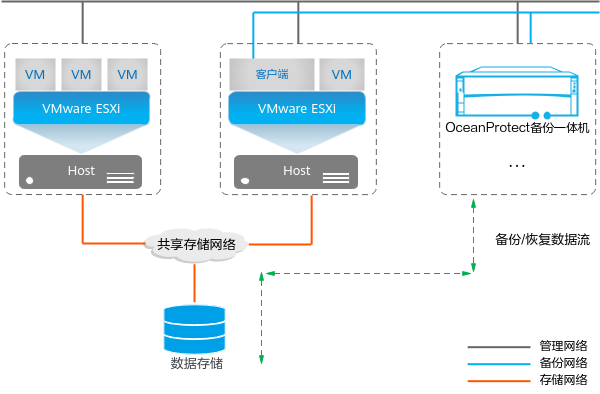
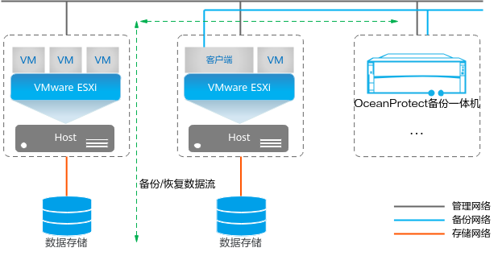

VMware虚拟机备份恢复支持通过SAN、Hot-Add、NBD、NBDSSL或存储层传输模式，访问数据存储中的虚拟磁盘数据。在配置备份任务前，请先了解VMware传输模式，便于您选择合适的传输模式进行备份，并确定客户端的部署方式。
实际备份过程中，如果客户端部署在物理服务器上，且开启了存储层备份开关，系统将按照存储层 > SAN > NBDSSL/NBD的顺序依次尝试每种传输模式；如果客户端部署在虚拟机上，且开启了存储层备份开关，系统将按照存储层 > Hot-Add > NBDSSL/NBD的顺序依次尝试每种传输模式，将使用可成功用于受保护虚拟机中所有磁盘的第一种模式进行备份恢复。
SAN传输模式
VMware虚拟化平台将虚拟磁盘存储在FC SAN或iSCSI SAN时，选择SAN传输模式备份。这种方式要求客户端部署在生产端的存储区域网络内。客户端所在主机直接读取SAN存储数据进行备份恢复，无需通过ESXi主机和LAN传输任何数据，因此数据传输效率高，且不占用以太网资源。
使用SAN传输模式备份恢复的要求：
- 客户端必须运行在独立的物理服务器上。
- 客户端所在的物理服务器必须能访问要备份的虚拟磁盘所在的数据存储，需要将数据存储对应的LUN映射到物理主机。
SAN传输模式的优势：
- 性能优：客户端所在主机通过SAN网络直接读取虚拟磁盘数据，相比其他传输模式备份恢复性能优。
- 独立传输：SAN传输模式直接将客户端所在主机和虚拟机所在的数据存储连接，直接通过SAN网络读取生产虚拟机的数据，对生产主机以及客户端所在主机网络影响最小。
- 支持备份恢复的磁盘类型：SCSI、SATA、IDE。
SAN传输模式的劣势：
- 客户端部署要求高：需要额外增加物理服务器，且需要配置专门的SAN网络。
- 生产存储仅支持SAN存储：生产存储非SAN存储时，无法使用SAN传输模式。
- 支持备份恢复的磁盘置备策略：SAN传输模式下，仅支持恢复“厚置备快速置零”类型的磁盘，如果虚拟机中包括非“厚置备快速置零”类型的磁盘，则该虚拟机所有磁盘的恢复将转换为NBDSSL传输模式。
Hot-Add传输模式
当客户端运行在VMware虚拟机时，客户端对待备份的目标虚拟机创建链接克隆，然后利用热添加功能将链接克隆虚拟机的VMDK挂载至客户端所在主机，客户端即可对目标虚拟机磁盘副本进行读取，从而完成对目标虚拟机的备份，这种方式即为使用Hot-Add传输模式的备份。
Hot-Add传输模式下，客户端的部署方式如
图2。
图2 Hot-Add传输模式客户端的部署方式
使用Hot-Add传输模式备份恢复的要求：
- 客户端必须运行在独立的VMware虚拟机。
- 对于运行客户端的虚拟机必须能够访问目标虚拟磁盘所在的数据存储。
- 运行客户端的虚拟机所在的数据存储，其VMFS块大小和版本必须与目标虚拟机所在的数据存储的VMFS块大小、版本相同。
Hot-Add传输模式的劣势：
- 客户端所在主机位置要求：Hot-Add传输模式要求客户端所在主机必须能够访问待备份虚拟磁盘所在的数据存储。
- 客户端所在主机需占用生产资源：客户端部署在虚拟机上，需要占用生产环境的资源，包括CPU，内存，网络，License授权等。
- 支持备份恢复的磁盘类型：SCSI、SATA。
NBD/NBDSSL传输模式
NBD/NBDSSL是基于局域网的传输模式，ESXi主机从生产存储中读取数据，然后通过局域网传输数据到客户端所在主机。
NBD与NBDSSL类似，区别在于NBD模式传输数据时不对数据进行加密；NBDSSL模式传输数据时使用SSL加密数据。对于NBD与NBDSSL，OceanProtect默认优先选择NBDSSL进行备份恢复。
NBD/NBDSSL传输模式下，客户端的部署方式如
图3。
图3 NBD/NBDSSL传输模式客户端的部署方式
NBD/NBDSSL传输模式的优势：
- 灵活部署：客户端可运行在独立的虚拟机或独立的物理服务器。
- 支持备份恢复的磁盘置备策略：支持备份恢复“厚置备延迟置零”、“厚置备快速置零”、“精简置备”全部类型的磁盘。
- 支持多种生产存储类型：本地磁盘、SAN存储、NAS存储。
- 支持备份恢复的磁盘类型：SCSI、SATA、IDE。
NBD/NBDSSL传输模式的劣势：
性能较差：ESXi主机需要通过生产环境的管理网络获取备份数据，对管理网络产生较大影响。
存储层传输模式
VMware虚拟化平台挂接存储设备上的LUN或文件系统（仅1.6.0及后续版本支持文件系统）作为数据存储（Datastore）时，选择存储层传输模式备份。这种方式要求客户端部署在独立的物理服务器或独立的虚拟机上。客户端所在主机从生产存储的快照中读取数据进行备份，无需通过ESXi主机传输任何数据，因此数据传输效率高，且不占用生产主机的以太网资源。
存储层传输模式下，客户端需部署在独立的物理服务器或独立的虚拟机上。
图4以客户端的部署在独立物理服务器为例。
使用存储层传输模式备份恢复的要求：
- 客户端必须运行在独立的物理服务器或独立的虚拟机上。
- 客户端所在的物理服务器或虚拟机必须能访问生产存储设备，需要将数据存储对应的LUN或文件系统快照映射到客户端所在主机。
存储层传输模式的优势：
- 灵活部署：客户端可运行在独立的物理服务器或独立的虚拟机上。
- 性能优：占用生产环境资源少，虚拟机快照存在时间短，备份过程中与原虚拟机解耦。
- 独立传输：将客户端所在主机和虚拟机所在的生产存储连接，客户端所在主机直接读取生产虚拟机的数据，对生产存储的影响与SAN传输模式一致。
- 支持多种生产存储类型：SAN存储、NAS存储。
存储层传输模式的劣势：
- 部署较复杂：注册vCenter或ESXi主机时需添加对应的生产存储设备到OceanProtect。
- 对待备份虚拟机有限制：待备份的虚拟机不能存在虚拟机快照。
- 对虚拟机磁盘所属的数据存储的源LUN总容量有限制：总容量不能超过15TB。